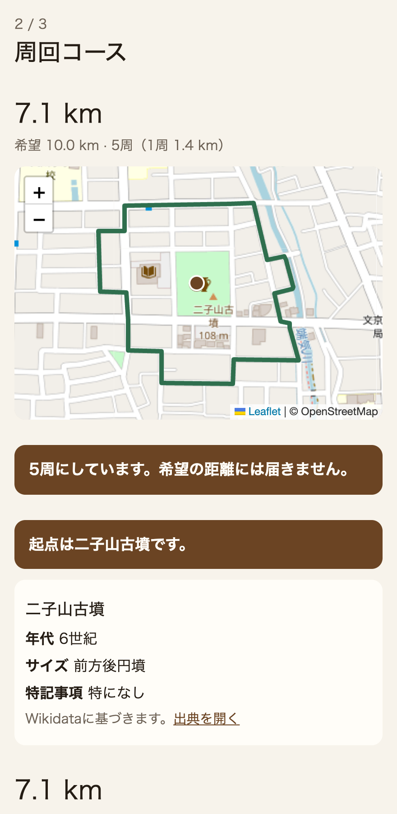
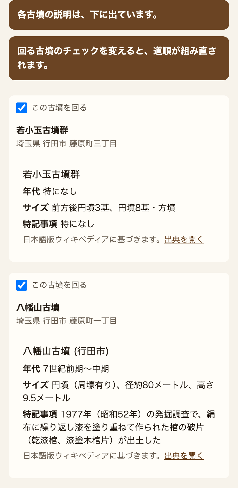
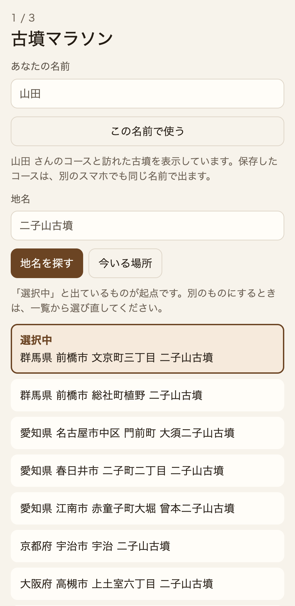
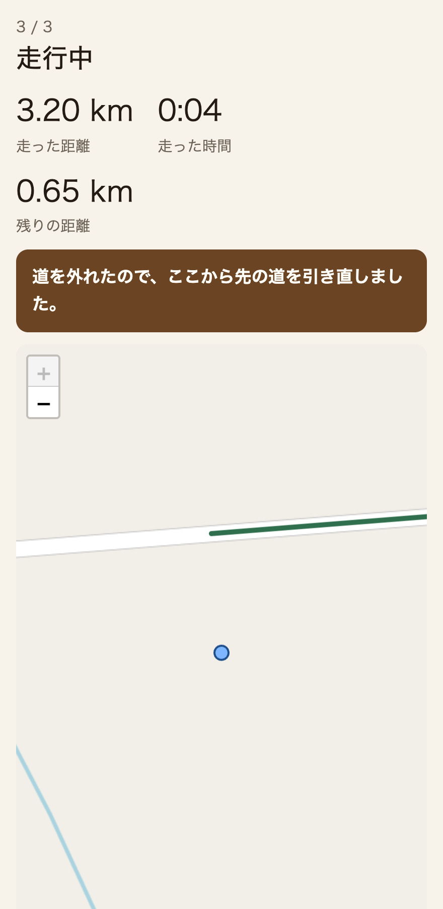
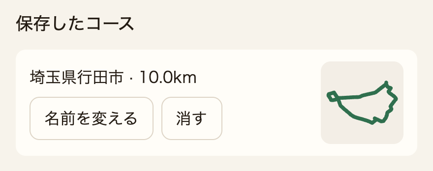

01 / STORY
大好きな趣味を同時に一瞬で行うには、このアプリが必要だった！
出張の朝、ふと思う。走りたい。せっかくなら、好きな古墳も見たい。靴はすぐ履ける。なのに、足が動くまでが長い。どの古墳があるか。どんな古墳か。何キロか。どう走るか。調べて、考えて、また調べる。好きな２つのことが、準備の山になる。一気に作ってほしい。AI-Driven Schoolで学んだのは、その面倒をAI（人工知能。調べたり、組み立てたりを任せる仕組み）に任せることだった。それがこのアプリを作ったきっかけです。
AI-Driven School / 卒業制作
走りたい。スマホを開く。 そのアプリは古墳へ導く。 ２つの趣味は、同時に出発する。
SCROLL
01 / STORY
出張の朝、ふと思う。走りたい。せっかくなら、好きな古墳も見たい。靴はすぐ履ける。なのに、足が動くまでが長い。どの古墳があるか。どんな古墳か。何キロか。どう走るか。調べて、考えて、また調べる。好きな２つのことが、準備の山になる。一気に作ってほしい。AI-Driven Schoolで学んだのは、その面倒をAI（人工知能。調べたり、組み立てたりを任せる仕組み）に任せることだった。それがこのアプリを作ったきっかけです。
02 / HARD
作り始める前に、grill-me（一つずつ問い、問題点を洗い出す進め方）で、次の問題を出しました。希望の距離に、道はぴったり合わない。説明も、走っているあいだの位置も、残し方も、最初の想像とは違いました。
距離は、無限へ。設定した距離は無視され、どこまでも走らされる。希望した距離は、全く希望していないランニング量になった。走りすぎる…
どの古墳へ？情報が表示されず、大小様々な古墳が選ばれる。時には、田んぼに沈んだ古墳へも。情報が…欲しい…
同じ地名や古墳名の入力。提案されたランニングコースは500km以上先。もはや旅行レベル。日帰りランニングではない距離に…
一度コースを外れると、もはや古墳には出会えない。脱線したランナーの面倒は、もはや見ない。一体全体どのように僕は帰れば良いのか…
せっかく提案された理想のランニングコース。一度アプリを消したら最後。そのコースは2度と走れないかもしれない。また、あのコースを走ってみたい…
03 / CRAFT
希望の距離を無視して、どこまでも伸びるコースにはしません。出発地点が古墳の周回は最大5周で、希望を超える周数にはしません。5周でも届かないときは5周で止め、その旨を画面に出します。それ以外は、希望の距離以上で1kmを超えない古墳だけを使い、合う古墳がなければコースを作らずその旨を出します。

近くの古墳を全部は並べません。希望の距離以上で1km以内の古墳だけ勧めます。説明は押さなくても各古墳の下に出し、年代・大きさ・特記がなければ「特になし」です。

同じ地名や古墳名は一覧にし、選んだ行に「選択中」と出します。住所検索が返事しなくても、駅名や地名から出発地点を決められます。同名の遠い場所へは飛びません。

道を外れても、残りの古墳と出発地点を捨てません。いまいる場所から、まだ着いていない古墳を通り、出発地点へ戻る道に引き直します。走った跡は地図に残します。画面には「道を外れたので、ここから先の道を引き直しました。」と出ます。

コースは、入れた名前ごとに残します。最大20本です。同じ名前なら、別のスマホにも出ます。一覧の右側には道のりを小さく出し、それを押すと大きい地図になります。名前はあとから変えられます。画面を閉じても、そのブラウザの記録を消さない限り残ります。

04 / SCREENS
写真ではなく、いまの画面の要点です。本体はスマホで開きます。走りたいときに、そこからコースを作ります。
1 / 3
地名を入れる。古墳から走るなら形を選び、距離を入れて、コースがその場でできます。
2 / 3
10.4 km希望 10 km · 選んだ古墳の道のり
各古墳の説明は、下に出ています。
特になし
大好きな古墳を巡る道と、その距離が同じ画面に出ます。説明がない古墳は「特になし」です。
3 / 3
3.2 km走った距離
12:40走った時間
残りの距離 7.1 km
二子山古墳に到着しました。
距離は実際に動いた長さです。時間は起点の近くに来てから増えます。残りは今いる場所からで、進むと減ります。道を外れると、残りを引き直します。
最大20本。同じ名前なら、別のスマホにも出ます。
右側の小さい道のりを押すと、作ったコースを大きい地図で出します。
CLOSE
AIに頼んだ。返ってきたのは、途中までだった。希望の距離は無視され、説明は沈黙し、同じ名前は遠くへ飛んだ。頼み直しても、終わりの10%は埋まらなかった。
作りながら直すと、目の前の不具合は消える。距離が伸びれば短くし、説明が無ければ一文を足す。しかし次の頼みで、別の正しさが入ってくる。希望の前後で合わせる案も、いちばん長い道を採る案も、そのときは筋が通って見えた。どれを残すかを先に書いていなかったので、終わりの10%は、直すたびに別の顔をした。先に決めたのは、画面の見た目ではなく、何をもって正しいとするかだった。出発地点が古墳の周回は最大5周で止め、届かなくても超えてもその旨を出す。それ以外は、希望の距離以上で1kmを超えないときだけコースにする。説明は押さなくても出し、無ければ「特になし」とする。同じ名前は一覧から選ばせ、選んだ行に「選択中」と出す。この一文があるから、できた画面が合っているかを、その場で確かめられる。決めてから進めると、頼み直しは迷子にならなかった。10%が埋まり、コースは走れるものになった。
正しさを先に書かない
目の前を直す
次の頼みで別の正しさ
10%が別の顔
正しさを先に書く
最大5周。希望以上で1km以内。選択中
画面をその一文と照らす
10%が埋まる
古墳そのものが難しかったわけではない。難しかったのは、距離の止め方、説明の出し方、同じ名前の選び方、道を外れたあとの戻り方、残し方だった。これは、古墳の名前を史跡の名前に替えても、同じ問いである。計画に残っているのは、古墳の豆知識ではない。希望の距離にどう合わせるか。情報がないとき、何と書くか。同名をどう選ばせるか。外れたら、いまいる場所から残りを通って戻るか。名前ごとに残すか。史跡巡りでも、この問いが先に書いてあれば、場所の一覧を差し替えるだけでコースは作れる。計画が無いところから史跡を始めると、また距離は伸び、同じ名前は遠くへ飛ぶ。計画があるから、次は古墳の外でも作れる。